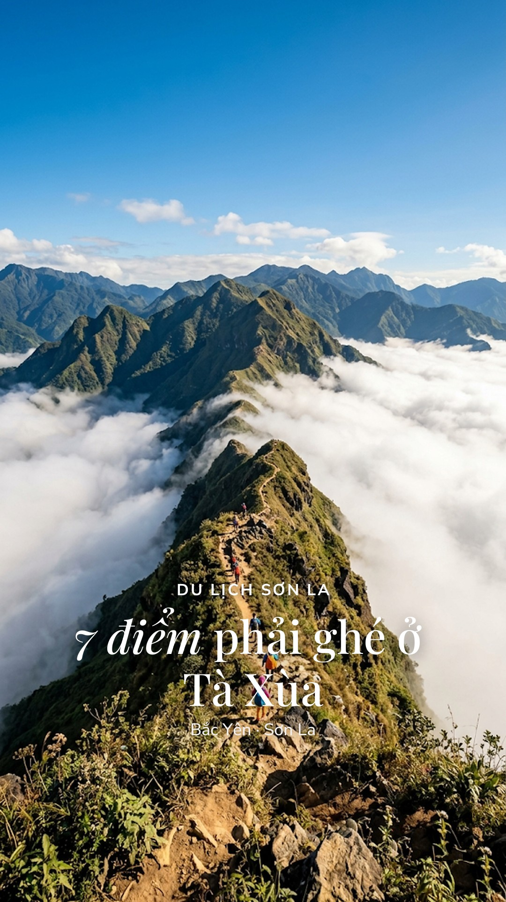
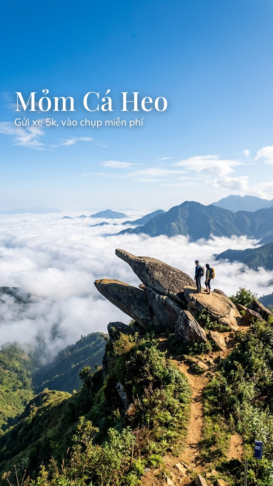
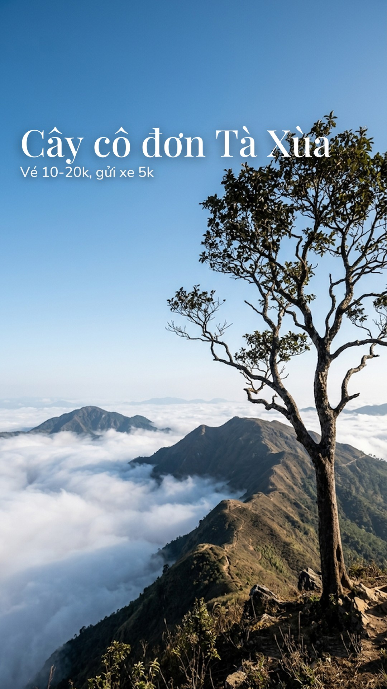
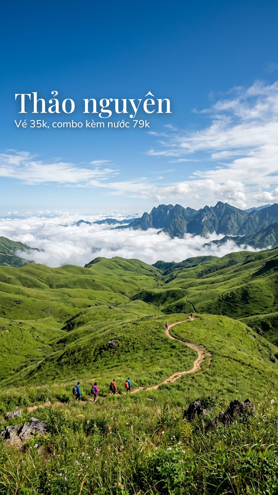
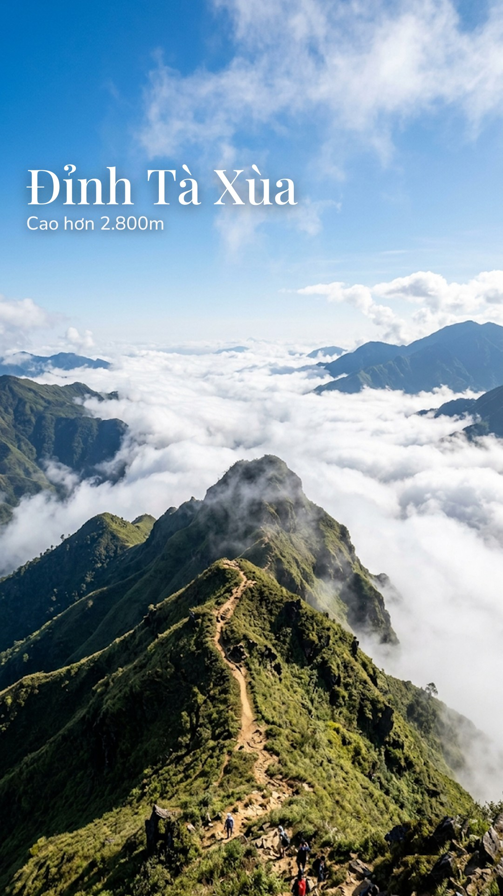
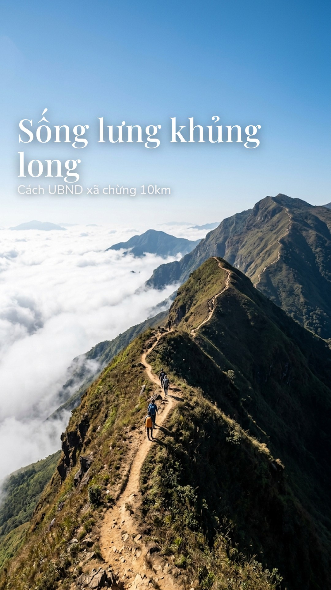
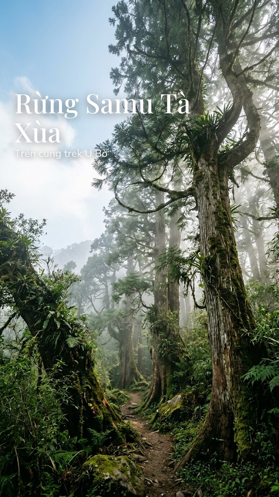
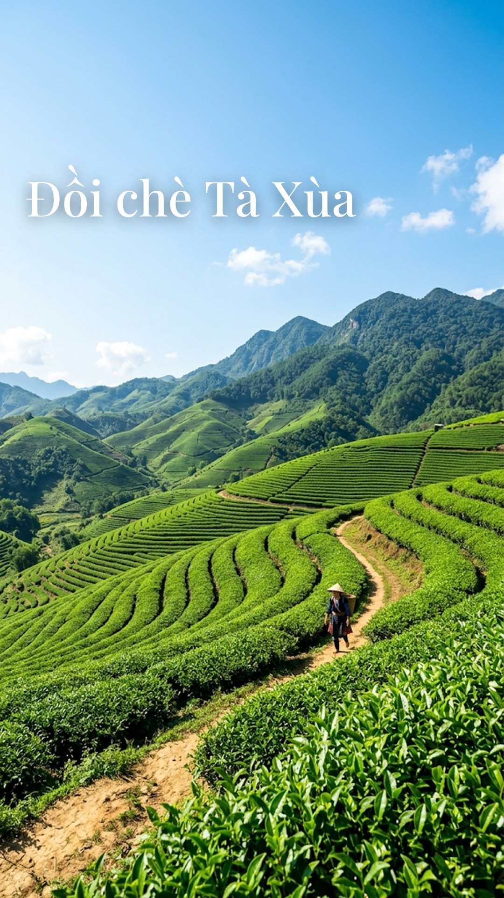
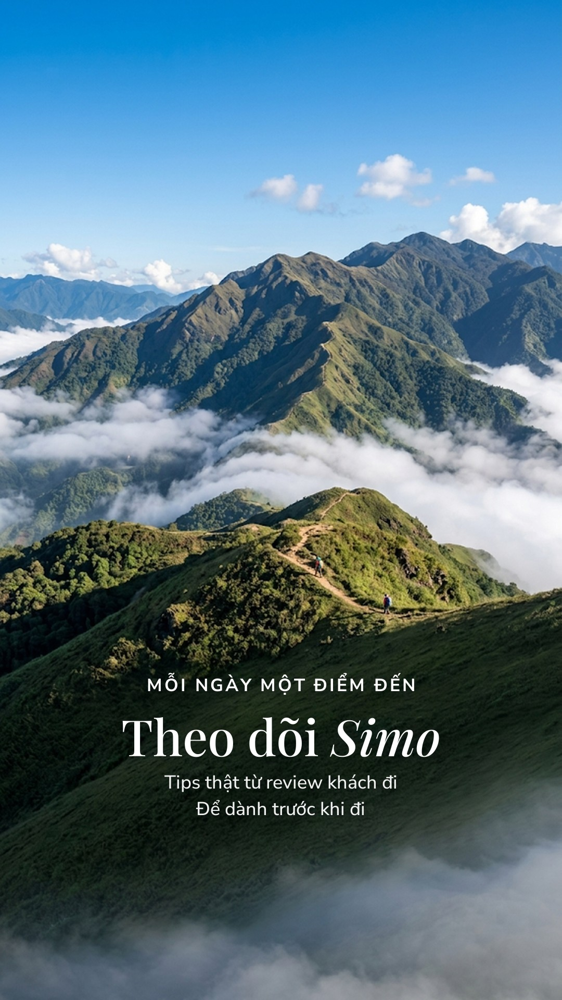

Cây cô đơn ở Tà Xùa thực ra có hai cây, và đó chưa phải điều bất ngờ nhất. 📍Mỏm Cá Heo — Mỏm đá vươn ra giữa không trung giống hệt đầu cá heo, một điểm check-in độc đáo 📍Cây cô đơn Tà Xùa — Tên là cô đơn nhưng thực ra có hai cây, giữa là vườn hoa trồng theo mùa 📍Thảo nguyên Tà Xùa — Đồi cỏ tư nhân có vé vào, chiều ra ngắm hoàng hôn có ghế tựa sẵn 📍Đỉnh Tà Xùa — Cao hơn 2.800m, một trong những đỉnh cao nhất Việt Nam, cung săn mây kinh điển 📍Sống lưng khủng long — Dải núi hẹp chạy dài giữa biển mây, đoạn nổi tiếng nhất của cung Tà Xùa 📍Rừng Samu Tà Xùa — Khu rừng nguyên sinh cổ thụ mang vẻ đẹp ma mị, huyền bí lẩn khuất trong làn sương mù 📍Đồi chè Tà Xùa — Những đồi chè xanh ngát nối tiếp nhau, mang lại cảm giác bình yên nơi vùng cao Tây Bắc 💡 Tips du lịch: • Gửi xe máy 5k, mua nước thì được miễn phí gửi • Vé vào 10-20k, gửi xe máy 5k, ô tô 20k • Vé 35k chưa nước, combo kèm nước 79k • Cao hơn 2.800m, một trong những đỉnh cao nhất Việt Nam #taxua #dulichvietnam #kinhnghiemdulich